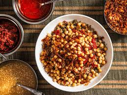
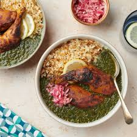

koshary
it is Egypt's national dish and a widely popular street food. It is a traditional Egyptian staple, mixing pasta, Egyptian fried rice, vermicelli and brown lentils, and topped with chickpeas, a garlicky tomato sauce, garlic vinegar, and crispy fried onions. Sprinklings of garlic vinegar and hot sauce are optiona
molokhia
is a type of jute plant and a dish made from the leaves of Corchorus olitorius, Mulukhiyah is generally eaten cooked, not raw, and it is either eaten chopped and sautéed in oil and garlic
